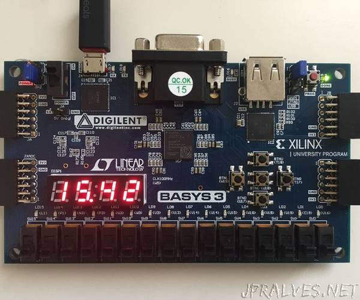

Projects
-

Pseudo-Spatial navigation for 360 tour videos. Designed novel ways to support multi-user 360 video experiences.
Advised by: Prof. Tony Tang -
VRUNet: Designed a novel CNN architecture for efficient, on the edge 2D Human Pose Estimation for analysing Vulnerable Road Users(VRUs)
Advised by: Prof. C. Krishna Mohan
code, Report -
ARchitect: Worked on an AR app used to elicit user ratings for different architectural designs in buildings.
Advised by: Prof. Pradeep G. Yammiyavar 
Hand Tracking & Gesture Recognition: Explored existing methods of hand pose estimation and gesture recognition. Built a basic prototype using image processing techniques through OpenCV.
Electronics Club, IITG
code
Circuit-X, an image processing challenge: Using Image Processing techniques, devised an algorithm which produces the truth table of a digital circuit given the Schematic diagram of the circuit.
Electronics Club, IITG
code, Presentation-

Stopwatch/Timer in Verilog: Wrote a structural code of a Timer/StopWatch in System Verilog HDL implemented on a BASYS-3 FPGA board.
Electronics Club, IITG
code -
RTL-SDR: Captured Live video feed data from Weather Satellites using Software Defined Radio(SDR) and QFH antenna.
Electronics Club, IITG
Report